Index:
1. Case Introduction
2. Software Installation
3. Before Analysis
4. Monitoring Site Database
5. Generate Trajectory
6. Item to be analysed
7. Basic Analysis
8. Trajectory Ensemble Receptor models
9. Event Analysis
10. Emission Inventory
11. GIS Editing
12. A Final Result
1. Case Introduction:
Atmospheric mercury data, including gaseous elemental mercury (GEM), gaseous oxidized mercury (GOM) and particulate-bound mercury (PBM), were collected by Atmospheric Mercury Network (AMNet) at two monitoring site, Huntington (44.0, -74.2) and Bronx (40.9, -73.9). Data from 2013 to 2014 were used as example. The NCEP/NCAR Reanalysis Data Archive is used as meteorological data for generating trajectory endpoints.
Go Top
2. Software Installation:
Install TraPSA software following install wizard, set up installation folder of TraPSA and MATLAB runtime (if it has not been installed). If the installation package without MATLAB Runtime is downloaded and MATLAB Runtime has never been installed on the computer, it will take several minutes to download MATLAB runtime (about 440 MB). The better choice is to download the installation package with MATLAB Runtime included. Note that in order to avoid unpredictable errors, do not install TraPSA into ‘C:\Program Files\’ and do not use shortcut.
Go Top

3. Before Analysis:
Path Setting:1. Click File → Path Setting to open the path setting window.
2. Set the path folder for meteorological data, HYSPLIT (if it is installed), map data and output.
3. Set default map center.
4. Click Confirm to finish path setting.
5. No default values for settings above.
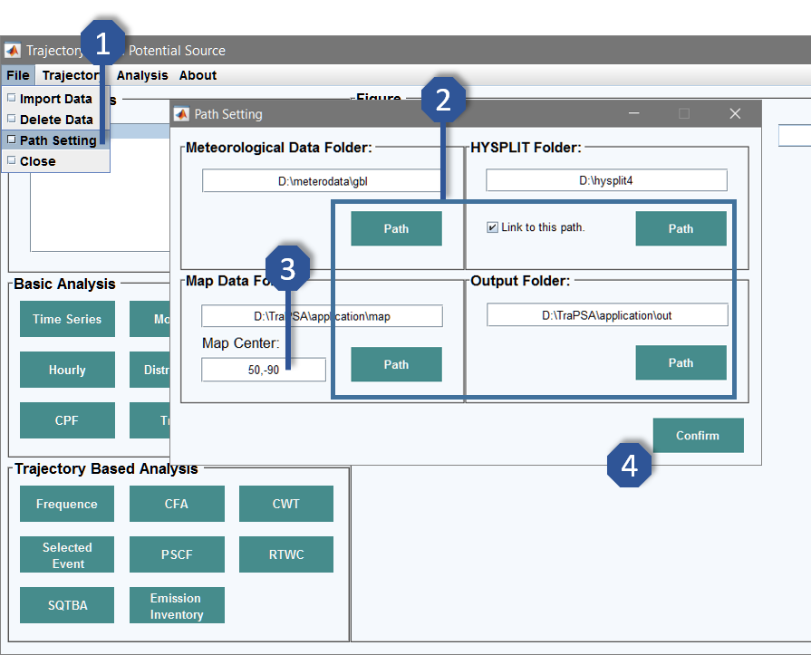
Parameters Setting:1. Click Analysis → Setting → Grid to set up the size of grid cell of trajectory ensemble models, unit is degrees. TraPSA currently only supports uniform grid size. The default value of grid is 0.5.
2. Click Analysis → Setting → Weight to open the grid weighting set up window. Enter weight level number, click √.
3. Select weight level, enter weight range and weight factor, click + to confirm current weight level.
4. Select methods need to apply weighting, click Apply to finish weight set up. No default weighting values are applied.
5. Click Analysis → Setting → Parameter to set up parameters used in analysis, CPF criterion and minimum CPF wind speed (applied in CPF analysis, default values are 0.8 and 5), PSCF criterion (applied in PSCF analysis, default value is 0.8), peak number (applied in grid peak identification, controls the displayed peak number, default value is 10) and map projection method (Robinson or Mercator, default is Robinson).
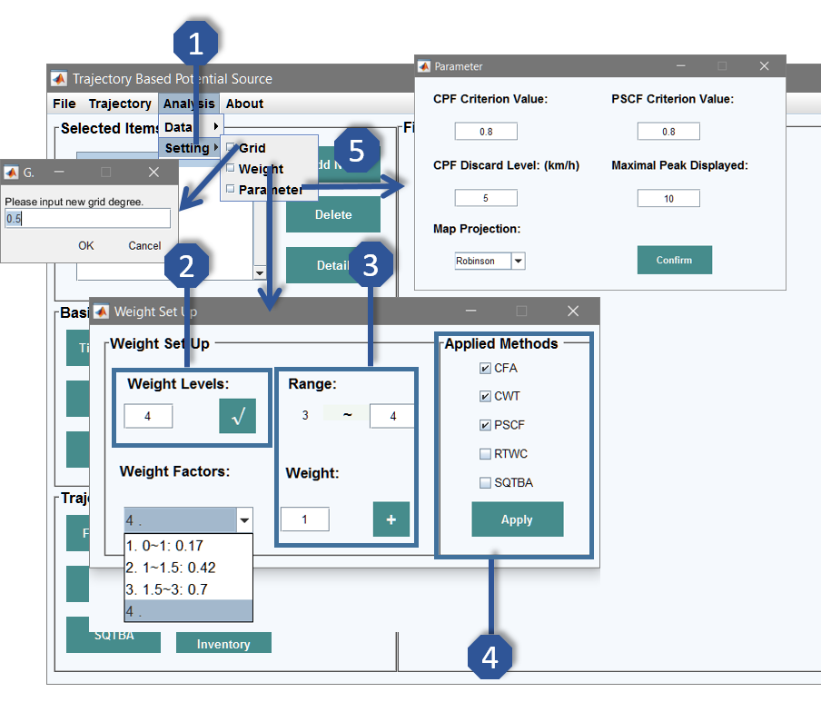
Go Top
4. Monitoring Site Database:
Database Establishment and Update:
Site database will be established when pollutant data be imoprted at the first time. Trajectory Data will be imported into database after they were generated.
1. Click File → Import Data to open the import window.
2. Enter site information, including site name, site location, missing data information and data file path. If the pollutant data need to be updated, please enter the identical site name.
3. Copy the date from data file and √ to make sure the date format is identifiable.
4. Click Import, then site information will change after the data is successfully imported or updated. Right click to see the detailed information if the panel is not big enough to display all the information.
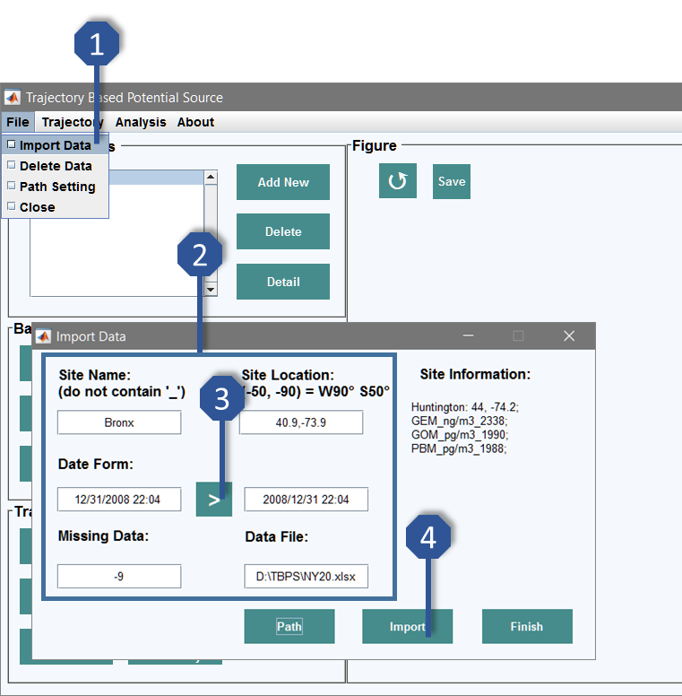
1. Click File → Delete Data to open the delete data window.
2. Select site, species or trajectory items that need to be discarded from database, then click Delete.
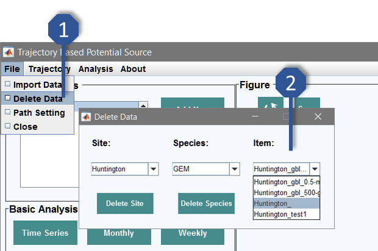
Data Export:1. Click Analysis → Data → Pollutants to show all data in pollutant database.
2. Click Export to generate an excel file containing the selected site pollutant data.
3. Click Analysis → Data → Trajectory to show all trajectory endpoints database.
4. Click Export to generate an excel file containing the selected trajectory item.
5. Click Export Shapefile to generate a shapefile for the selected trajectory item.
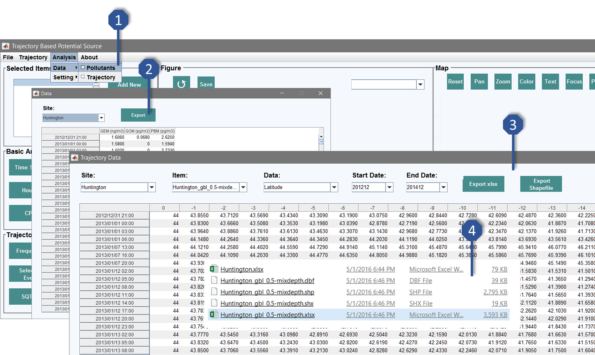
Go Top
5. Generate Trajectory:
Set Up Trajectory:1. Click Trajectory → Set Up to open the trajectory setting window.
2. Set trajectory parameters, including site, start-end date, starting height and trajectory time in the left panel. Three different units can be used for trajectory height. Note that the height number should be < 1 if the fraction of mixed layer is used as height unit. The unit is meter for other two options. The functions of two options will be introduced in the next part.
3. Set up meteorological data information in the right panel. Name is an arbitrary string used for labeling the trajectory item. The meteorological data filename is separated into three parts, date string, string before the date and string after the date. If multi-date file exists for one month, use ‘#’ instead of the incrementing number.
4. Click Check to check whether the time period has been analyzed by the current setting to avoid the repeated calculation. Click Confirm to generate a batch file for trajectory calculation.
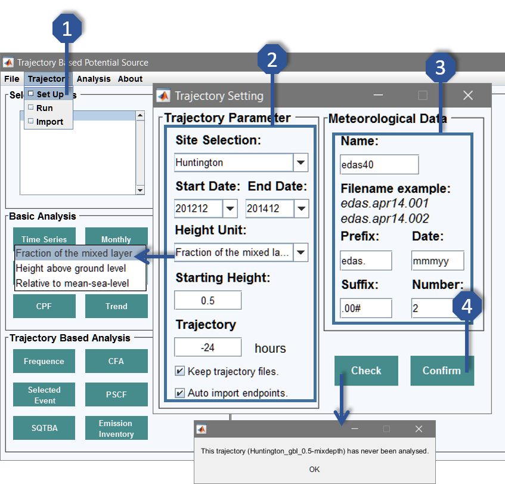
Run Trajectory:1. Click Trajectory → Run to start HYSPLIT trajectory analysis. This step may take a relative long time depending on the number of data points, back trajectory time, meteorological data and computer configuration. It generally takes 3 to 10 minutes to run 3000 data points for 72 h back trajectory.
2. If option Auto import endpoints is applied, the endpoints files generated by HYSPLIT will be automatically imported into TraPSA.
3. If option Keep trajectory files is not applied, the original files generated by HYSPLIT will be automatically deleted from the output folder.
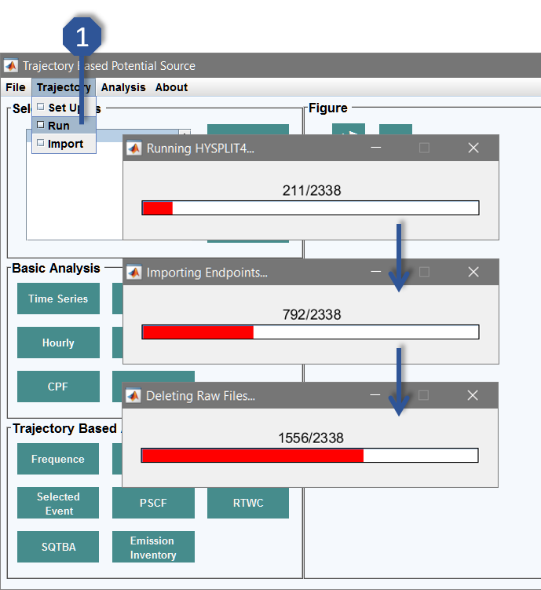
Import Trajectory:It is highly recommended using TraPSA to generate trajectory endpoints, it can do trajectory analysis in a smart and fast way. TraPSA also supports importing original HYSPLIT output files. These endpoints files must have identical date information corresponding to the concentration data in database, otherwise TraPSA can’t identify the files.
1. Click Trajectory → Import to import trajectory files generated by TraPSA if the option Auto import endpoints is not applied, or to import already existed HYSPLIT output files.
2. Select the site and trajectory item that needs to be imported, or click Add New to create a new trajectory item for current importing.
3. Click Select Files to select the endpoint file, then click Import. Note that the trajectory time should be the maximum back trajectory time of all the selected files.
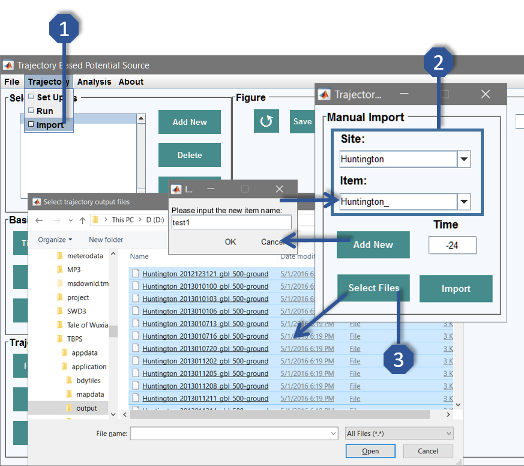
Go Top
6. Item to be Analysed:
1. Click Add New to add items need to be analysed.
2. An item need to be analysed would be extracted from the database which includes one pollutant species, one trajectory item, time periods (any specific time points or sort by season, weekdays and day period) and normalization method. These features can be selected in the corresponding panels.
3. A period without the trajectory item is not allowed to be added. Also make sure the selected trajectory time is less than the maximum back trajectory time. Then click Add.
4. Name the featured item to be analysed with arbitrary string, click OK. Then add another analytic item.
5. Click Finish to close the window when all analytic items are added. These items will be shown in Selected Items.
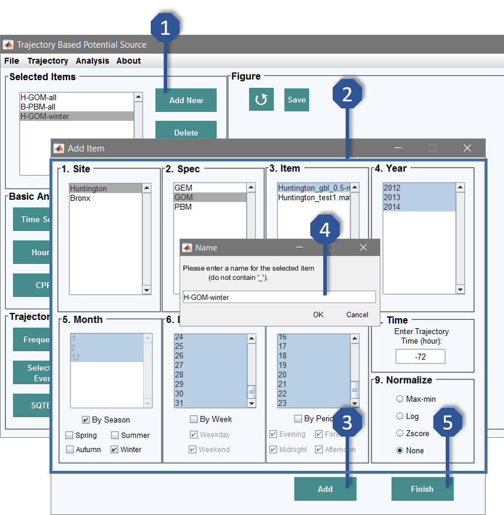
Go Top
7. Basic Analysis:
1. Click Select Items. Multiple analysising options are allowed, however no multiple-site methods were used in basic analysis. Therefore, all the basic analysis will be carried out and displayed separately.
2. Click any basic method, and the results of selected items will be displayed in the figure panel.
3. Click the pop-up menu in the figure panel to switch figures. Right click on pop-up menu to delete the current figure.
4. Click Save in the figure panel to save current figure information, figure will be saved as a ‘.png’ file and its data will be saved as a text file into the output folder.
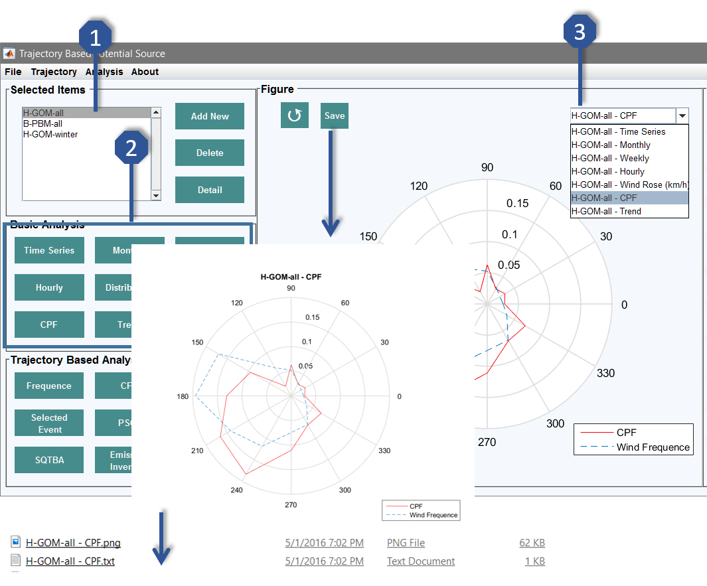 Result Examples of Basic Analysis Methods:
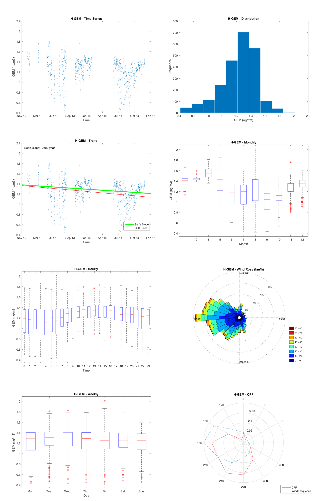
Go Top
8. Trajectory Ensemble Receptor models:
1. Click Select Items. Multiple selections are allowed for trajectory based analysis.
2. Click any trajectory ensemble method. If multi-site is selected, a dialogue box will be display, click No to apply multi-site methods.
3. The result of trajectory ensemble model will be created as a new layer on the map panel.
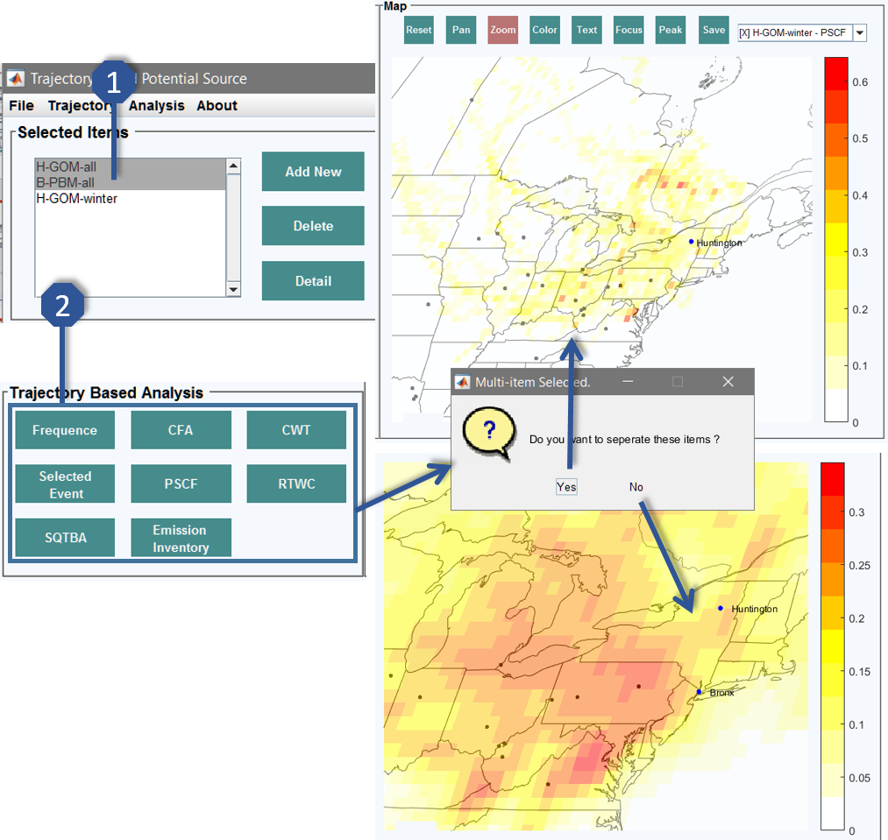 Result Examples of Trajectory Ensemble Methods:
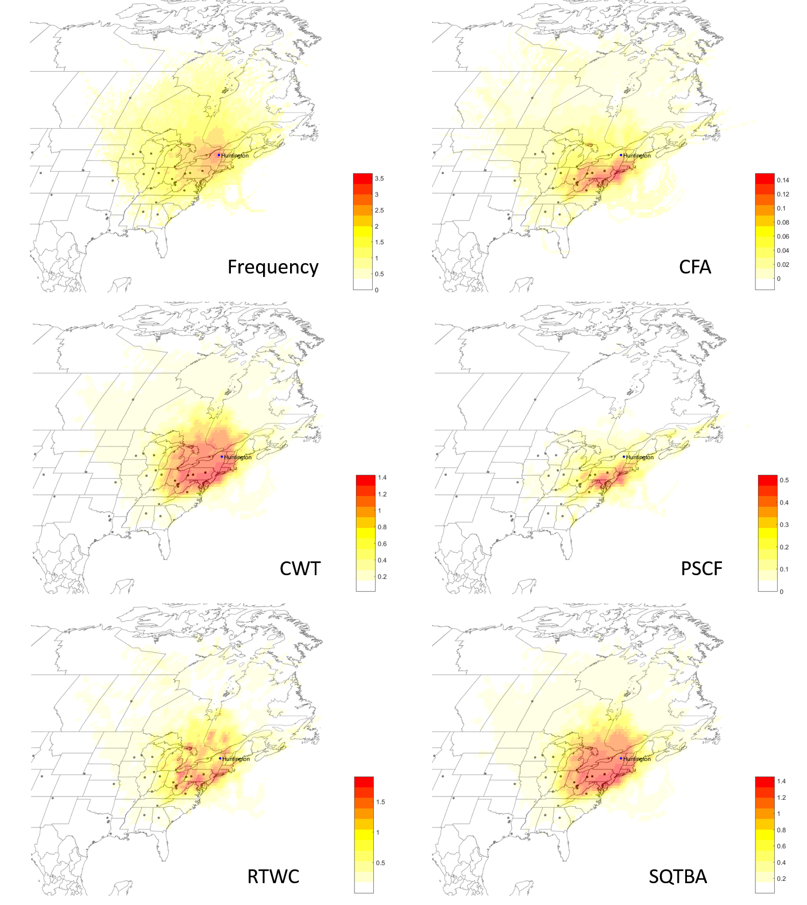
Go Top
9. Event Analysis:
1. Click Selected Event to open the event selection window.
2. Any time point could be selected as an event. Highest or lowest events could be selected use the special events determination function. Click √ to add events. Right click could delete the selected event.
3. Click Confirm to progress.
4. Three figures will be created as shown below: trajectory lines will be created as a new layer on the map panel; the data points, which are selected as events, will be marked on the corresponding time series (the time series figure will be created if it is not existed); 3D trajectory lines will be generated.
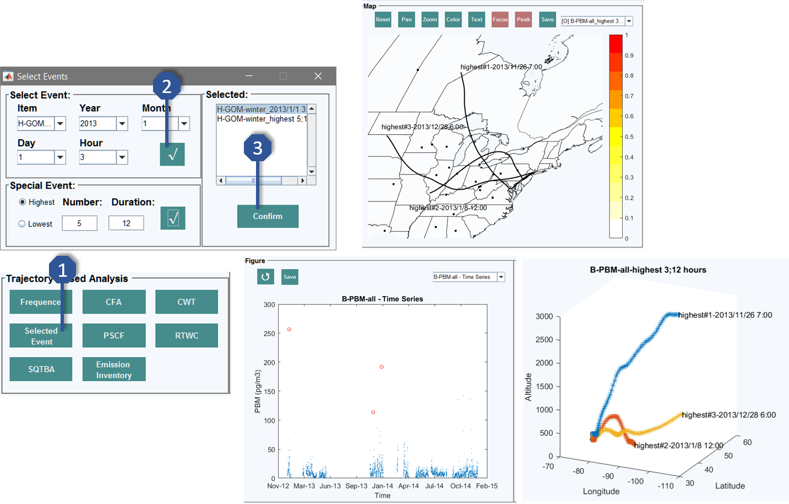
Go Top
10. Emission Inventory:
1. Click Emission Inventory to import the inventory file.
2. The import file should be organized as the format shown below.
3. The emissions inventory map will be created as a new layer on the map panel.
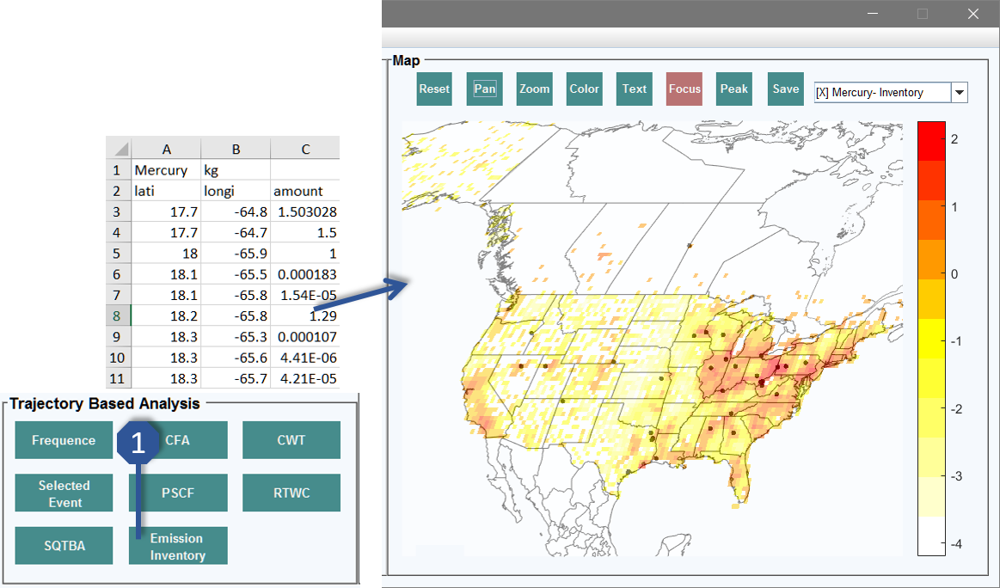
Go Top
11. GIS Editing:
Objects Editing:1. Pop-up menu on the right top of map is a switcher of map layer. [X] means the status of the layer is on, the layer is displayed on the map; [O] means the status of the layer is off, the layer is not displayed on the map. Left click to switch the status, right click to delete the layer. Note that the items will be stacked on the top when the status is changed from off to on.
2. Click Reset to re-draw the map; click Pan to move the displayed map; click Zoom for map zoom in and zoom out; click Color to adjust the colorbar.
3. Click Text to add text and point on the map. TraPSA allows the users to arbitrary determine the position of text or point if the Location is empty. The point will not be created if Marker is n.
4. Click any item on the top of the map to adjust its properties, the possible adjustments are shown below.
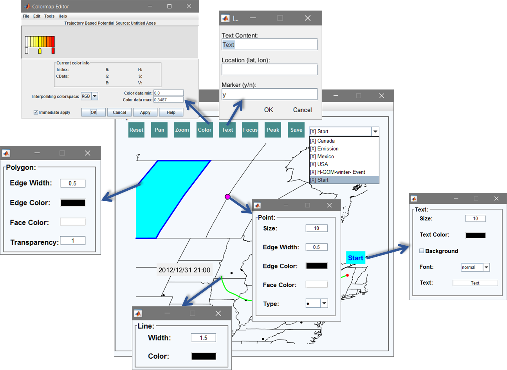
Grid Editing:Click Focus to apply grid smoothing; click Peak to identify and display the peak of current grid. The results after applying Focus and Peak are shown below.
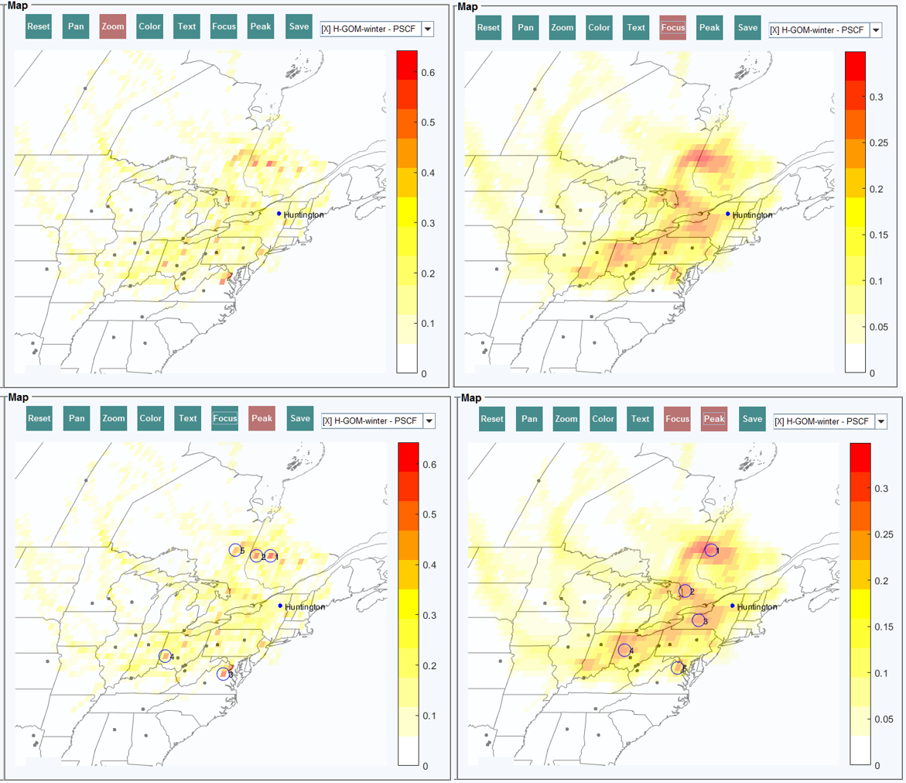
Go Top
12. A Final Result:
A final result of multi-site PSCF analysis applying on Bronx and Huntington GOM is shown below. Click Save on map panel to generate a ‘.png’ file for the currently displayed map. The displayed grid (including original and smoothed grid) will be saved as a Geo TIFF file (‘.tif’). The displayed trajectory line will be saved as one shapefile (‘.shp’), and the displayed peak point will be saved as a text file that including latitude, longitude and intensity.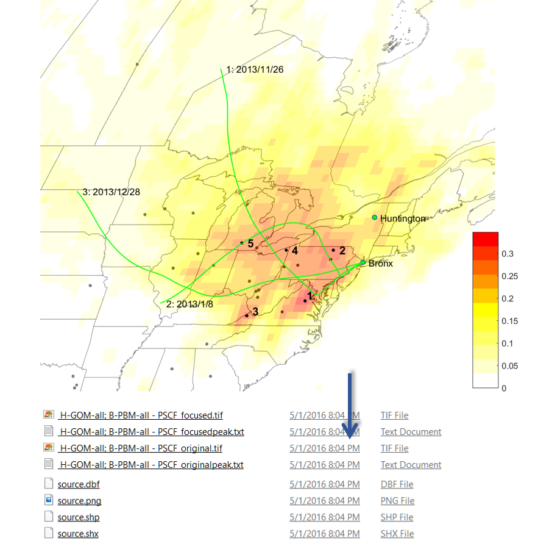
Go Top